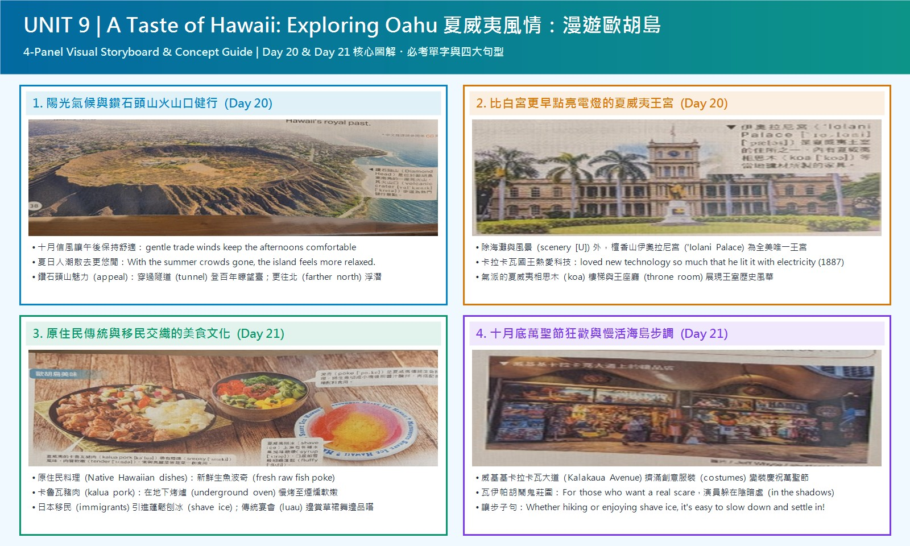

十月夏日人潮散去，歐胡島更顯悠閒（relaxed）。鑽石頭山步道穿過隧道（tunnel）登上百年瞭望臺，更往北（farther north）還有北岸巨浪與浮潛勝地。
keep the afternoons comfortable檀香山中心的伊奧拉尼宮（'Iolani Palace）是全美唯一王宮。卡拉卡瓦國王熱愛新科技，1887 年便用電力（electricity）點亮王宮，比白宮早了好幾年！
loved technology so much that...原住民料理有新鮮生魚（raw fish）波奇，以及地下烤爐（oven）慢烤的卡魯瓦豬肉；還有日本移民引進的蓬鬆刨冰，可在傳統宴會（luau）邊看草裙舞邊品嚐。
Native dishes / call it home十月底卡拉卡瓦大道（Avenue）變身萬聖節派對，瓦伊帕胡鬧鬼莊園則有演員躲在暗影（shadows）嚇人。無論健行或吃刨冰，都能輕鬆融入海島生活！
those who... / Whether A or BOctober (S) is (V) one of the best months (C)；to visit Oahu 修飾 months，the third-largest of the Hawaiian Islands 是 Oahu 的同位語。
is：陳述「每年十月都是如此」的一般事實，旅遊介紹的標準時態。
to visit 後位修飾 months，逗號後的名詞片語當同位語補充 Oahu。
one of the + 最高級 + 複數名詞，months 不可漏 -s；the + 序數 + 最高級（the third-largest）表「第三大」。
October is（主詞＋連綴動詞）one of the best months（主詞補語）one of the best + 複數名詞 固定譯「最佳……之一」，「之一」放在最後收尾，所以這個語塊會被前面的修飾語隔開。
to visit Oahu（不定詞片語（後位修飾））the third-largest of the Hawaiian Islands（同位語）語塊 1 ➔ 語塊 3 的「造訪」 ➔ 語塊 4（同位語超車到島名前） ➔ Oahu ➔ 語塊 2 的「最佳月份之一」壓軸
這句主幹很短：October is one of the best months，後面掛的是不定詞和同位語，沒有子句。
October is one of the best months 說完，to visit Oahu 說明是「做什麼事」的最佳月份；Oahu 後面打逗號，直接放名詞片語 the third-largest of the Hawaiian Islands 補充它是哪座島，等於省略了 which is。
one of the + 最高級 + 複數名詞：注意 months 一定要加 -s！the + 序數 (third) + 最高級 (largest) 表「第幾大／長……」。
Oahu 後加逗號放同位語 , the third-largest of the Hawaiian Islands，精簡又高分！
The days (S) are (V) sunny／the ocean (S) is (V) still warm...／gentle trade winds (S) keep (V) the afternoons (O) comfortable (C)。
are / is / keep：描述十月的典型天氣，屬於一般事實。
A, B, and C 結構，最後一個 and 連接三個完整子句；第三句是 keep + O + 形容詞 的不完全及物用法。
warm enough for swimming 處理成「溫暖得足以游泳」，並在第三句前補「而」讓語氣轉到風。
形容詞 + enough + for N／to V，enough 放在形容詞後面，不寫 ❌ enough warm；keep + O + adj. 的補語用形容詞，不用副詞 ❌ comfortably。
The days are sunny,（第一個子句）the ocean is still warm enough for swimming,（第二個子句）warm enough for swimming 譯「溫暖得足以游泳」，still 譯「依然」，暗示夏天過了水溫還沒降。
and gentle trade winds（連接詞＋第三個子句主詞）keep the afternoons comfortable.（動詞＋受詞＋補語）keep + O + adj. 譯「讓……保持……」：「讓午後保持舒適宜人」，afternoons 譯「午後」比「下午」更有文字感。
語塊 1 ➔ 語塊 2 ➔ 語塊 3 ➔ 語塊 4，三個子句全部順翻
這句是三個短句串在一起，每一段都有自己的主詞和動詞，所以我們從頭順著翻就好。
第一段 The days are sunny，「白天天氣晴朗」；第二段 the ocean is still warm enough for swimming，「海水依然溫暖得足以游泳」。
keep + O. + O.C.keep + 受詞 (the afternoons) + 形容詞補語 (comfortable) 表「使……保持某種狀態」。切記不可誤用副詞 × comfortably！warm enough：enough 修飾形容詞／副詞時必須後置。
sunny）、觸覺水溫（warm enough）與微風體感（keep... comfortable）。
the island (S) feels (V) more relaxed (C)；句首 With the summer crowds gone 交代背景。
feels：描述十月時島上普遍的氛圍。
with + 受詞 + 過去分詞 的附帶狀況結構，不是子句，沒有連接詞；等於 Because the summer crowds are gone。
feel 是連綴動詞，後接形容詞 relaxed，不寫 ❌ relaxedly；with + O + p.p. 中 gone 表「已經離開」的狀態，不寫 ❌ with the crowds go。
With the summer crowds gone,（with 附帶狀況片語）with + O + gone 表「某物已經離開的狀態」，在句首帶出背景，譯「隨著……散去」；crowds 譯「人潮」比「人群」更貼近觀光語境。
the island feels（主詞＋連綴動詞）more relaxed.（主詞補語）語塊 1（句首背景） ➔ 語塊 2 ➔ 語塊 3，全句順翻
句首 With the summer crowds gone 是背景，本來就在前面，我們直接從這裡開始翻。
主句 the island feels more relaxed，「整座島嶼感覺更加悠閒放鬆」。
the island feels。句首的 With the summer crowds gone 沒有動詞時態，是「with + 受詞 + 分詞」結構：受詞 crowds 與 gone 之間是「人潮已離開」的被動／完成關係，用來說明主句的背景與原因。
with + O. + p.p. 表附帶狀況With + the summer crowds (O.) + gone (p.p. 作 O.C.) 意為「由於／隨著夏日人潮已經散去」。relaxed 除了指「人感到放鬆」，也可形容地方或氣氛「悠閒自在、無拘無束的」。
With + O. + O.C. 取代 BecauseBecause the summer crowds have gone 升級為 With the summer crowds gone！
Nature (S) is (V) a big part (C)；of Oahu’s appeal 修飾 part。
is：陳述一般事實，同時作為本段主題句。
of Oahu’s appeal 後位修飾。
a big part of + N 的 of 片語要提前：「歐胡島魅力的一大……」。
appeal 當名詞是「吸引力、魅力」，不是「上訴」；a big part of 後接名詞，不必加冠詞以外的修飾。
Nature is（主詞＋連綴動詞）a big part（主詞補語）of Oahu’s appeal.（介系詞片語（後位修飾））語塊 1 ➔ 語塊 3（of 片語超車） ➔ 語塊 2 壓軸
這是短句，主幹 Nature is a big part，後面只有一個 of 片語。
a big part 後面接 of Oahu’s appeal 說明是「什麼的一部分」，of 片語永遠修飾它前面的名詞。這句同時是段落主題句，後面兩句的鑽石頭山與北岸都在支持它。
appeal (n. 吸引力、魅力)Nature 指整體「大自然」時為不可數名詞，且不加冠詞 the！
X is a big part of Y’s appeal.（X 是 Y 魅力的一大來源）極適合用在介紹城市或台灣景點的段落開頭！
Diamond Head (S) is (V) the island’s most famous hike (C)；兩個逗號中間是同位語。
is：介紹景點的一般事實。
an old volcanic crater on the edge of Waikiki 是 Diamond Head 的同位語，夾在主詞與動詞之間，裡面再用 on the edge of 後位修飾 crater。
on the edge of Waikiki 也要放到「火山口」前：「位於威基基邊緣的古老火山口」。
is；hike 在這裡是名詞「健行路線」。
Diamond Head,（主詞）an old volcanic crater（同位語）on the edge of Waikiki,（介系詞片語（後位修飾 crater））is the island’s most famous hike.（動詞＋補語）語塊 3（地點超車） ➔ 語塊 2（同位語超車） ➔ 語塊 1 ➔ 語塊 4
先遮住兩個逗號中間那段，主幹是 Diamond Head is the island’s most famous hike。
最後接動詞和補語：「是島上最著名的健行路線」。
an old volcanic crater on the edge of Waikiki 沒有動詞，是名詞片語，跟 Diamond Head 指同一個東西，所以是同位語，等於省略了 which is。去掉它，主幹 Diamond Head is the island’s most famous hike 依然完整。
on the edge of...（在……的邊緣）hike 在此作可數名詞，指「健行路線、健行活動」。
, an old volcanic crater on the edge of Waikiki, 先括號起來，主幹就只剩 Diamond Head is the island's most famous hike！
The trail (S) passes through (V1) a tunnel (O) and climbs to (V2) a century-old lookout；with sweeping views of the coast 修飾 lookout。
passes / climbs：描述步道的路線，屬於固定不變的地理事實。
and 連接兩個共用主詞的動詞片語；with 片語表「具有」，後位修飾 lookout。
with sweeping views of the coast 要提前到「瞭望臺」前；views of the coast 也要倒成「海岸景觀」。
century-old 是連字號複合形容詞，century 不加 s（❌ centuries-old 用法不同）；sweeping views of 是常見搭配「……的壯闊景色」。
The trail passes through a tunnel（主詞＋第一個動作）and climbs to（第二個動作）a century-old lookout（受詞）with sweeping views of the coast.（with 介系詞片語（後位修飾））語塊 1 ➔ 語塊 2 ➔「一座」 ➔ 語塊 4（with 片語超車） ➔ 語塊 3 的「百年瞭望臺」壓軸
主詞 The trail 後面有兩個動作，用 and 串起來，我們依照路線的先後順著翻。
第一個動作 passes through a tunnel，「步道穿過一條隧道」；第二個 climbs to，「並向上攀升至」。
climbs，所以它連接的是兩個動詞片語，主詞都是 The trail。句尾 with sweeping views of the coast 緊貼在 lookout 後面，說明瞭望臺「擁有」什麼，不是在描述動作。
pass through（穿過立體內部）tunnel 是立體管道，穿過其內部必用 through（若越過平面馬路則用 across）。sweeping (adj.) 指景觀「一望無際的、遼闊壯觀的」。
with + 景觀 取代 which hasa lookout which has sweeping views，不如直接用介系詞 with sweeping views of the coast，更簡潔有力。
the North Shore (S) is known for (V) giant winter waves，but calmer waters (S) ... are (V) perfect (C) for snorkeling or a boat tour。
is known / are：介紹地方特色的一般事實。
but 連接兩個對比的子句：北岸冬浪大 vs. 其他地區水域平靜；句首 Farther north 是地點副詞。
be known for 的原因要提到「聞名」前；in other areas 後位修飾 waters，要放到「水域」前。
farther 表實際距離「更遠」，further 多用於抽象程度；be known for（因……而聞名）≠ be known as（以……身分著稱）。
Farther north,（地點副詞）the North Shore is known for giant winter waves,（第一個子句）be known for 譯「以……聞名」，原因要放在「聞名」前：「北岸以巨大的冬季海浪聞名」。
but calmer waters in other areas（連接詞＋第二個子句主詞）in other areas 修飾 waters，地點放前面：「其他地區較平靜的水域」。but 譯「但」。
are perfect for snorkeling or a boat tour.（動詞＋補語）perfect for 不譯「完美的」，譯「非常適合」；前面補「則」，和北岸形成對比。a boat tour 譯「搭船遊覽」。
語塊 1 ➔ 語塊 2（原因超車到「聞名」前） ➔ 語塊 3（地點超車到「水域」前） ➔ 語塊 4
句首 Farther north 是地點，直接翻「更往北走」。接著是 but 連接的兩個子句，一個講浪大、一個講水平靜。
最後 are perfect for snorkeling or a boat tour，「非常適合浮潛或搭船遊覽」。
the North Shore is known for… 與 calmer waters … are perfect for…。前句講北岸冬天浪大，後句講其他地方水平靜，兩件事意思相反，所以用 but。calmer 是比較級，比較的對象就是前面的 giant winter waves。
farther vs. watersfarther + 方向副詞 (north/south) 指實際空間距離「更往北／更往南」。water 加 -s 變成複數 waters 時，專指「某處的海域、水域」，故動詞配複數 are！
giant waves vs. calmer watersbut 對比「巨浪衝浪勝地」與「平靜浮潛海域」，展現景點多元性。
Oahu (S) also has (V) an interesting history (O)；句首 Beyond its beaches and scenery 是介系詞片語。
has：陳述事實，同時作為新段落的主題句。
Beyond 在這裡等於 besides，表「除了……之外（還有）」，搭配 also 帶出新話題。
beyond 表「除了」時是加法（還有），和 except 的排除意義不同；scenery 不可數，不寫 ❌ sceneries。
Beyond its beaches and scenery,（介系詞片語）Oahu also has（主詞＋動詞）an interesting history.（受詞）語塊 1 ➔ 語塊 2 ➔ 語塊 3，全句順翻
句首 Beyond its beaches and scenery 本來就在前面，我們順著翻。
Oahu also has。句首 Beyond its beaches and scenery 總結上一段講的大自然，also 再帶出新主題「歷史」，是段落之間的轉場句。
scenery (風景、景色)scenery 是集合不可數名詞，絕對沒有 × sceneries，也不能加 a！（而 view / scene 則是可數名詞）。
Beyond + N., S. also...Beyond its beaches and scenery, Oahu also...，轉折自然流暢！
’Iolani Palace (S) is (V) the only royal palace (C)；句首 In the heart of Honolulu 表地點，句尾 in the US 修飾範圍。
is：陳述一般事實。
in the US 限定「唯一」的範圍。
in the US 要提前到「唯一的王宮」前。
the only + 單數名詞 前面用定冠詞 the；in the heart of（在……的中心）是固定片語。
In the heart of Honolulu,（地點介系詞片語）in the heart of 不譯「心臟」，譯「中心地帶」。中文把它改成主詞的修飾語：「位於檀香山中心地帶的」，位置不變，接著直接說宮名。
’Iolani Palace（主詞）is the only royal palace（動詞＋補語）in the US.（介系詞片語（範圍））語塊 1（改成修飾語） ➔ 語塊 2 ➔「是」 ➔ 語塊 4（範圍超車） ➔ 語塊 3 的「唯一的王宮」壓軸
句首 In the heart of Honolulu 是地點，我們把它當成王宮的修飾語，從這裡開始翻。
’Iolani Palace is the only royal palace 很短，資訊都在兩個介系詞片語：句首片語說它在哪裡，句尾 in the US 說「唯一」是在哪個範圍內。中文把兩個地點都放到名詞前面。
in the heart of + 城市in the center of 更生動地道，表示「在……的核心／市中心地帶」。
King Kalākaua (S) loved (V) new technology (O)；so much that he lit the building... 是結果子句；破折號後補充比較。
loved / lit：敘述 1887 年的歷史事件。
so + 副詞 + that 引導結果副詞子句：「如此……以致於……」；破折號後的 years before the White House 是補充說明，省略了 lit it。
in 1887 與方法 with electricity 要提到「點亮」前；破折號後的比較順翻。
so...that 中 so 後接形容詞或副詞（loved...so much），such...that 後接名詞；light 的過去式 lit；light A with B（用 B 照亮 A）。
King Kalākaua loved new technology so much（主句）so much 譯「非常」，和後面的「以致於」搭配：「卡拉卡瓦國王非常熱愛新科技」，loved 對技術譯「熱愛」。
that he lit the building（結果子句主幹）with electricity in 1887（方法＋時間片語）—years before the White House.（破折號補充）語塊 1 ➔ that「以致於」 ➔ 語塊 3（時間、方法超車到動詞前） ➔ 語塊 2 的「點亮了這座建築」 ➔ 語塊 4
主句 King Kalākaua loved new technology so much 先翻，看到 so much 就要準備接 that 的結果。
破折號後的 years before the White House，接上「比白宮還早了好幾年」。
King Kalākaua loved new technology so much 說原因（程度），that he lit the building with electricity in 1887 說造成的結果。that 子句是完整句，不缺成分，所以不是關代。破折號後面只剩 years before the White House，完整說法是 years before the White House was lit，把重點留給「比白宮早」。
so + Adj./Adv. + that + S. + V.so much 為副詞片語修飾前方的動詞 loved，後接 that 結果子句。lit 為動詞 light（照亮、點亮）的過去式（light – lit – lit），搭配介系詞 with electricity（用電力）。
—）製造驚喜反差—years before the White House（白宮直到 1891 年才裝設電燈），用短短五個字凸顯卡拉卡瓦國王的前瞻性！
the grand koa stairs and historic throne room (S) offer (V) a look (O)；into Hawaii’s royal past 修飾 look。
offer：描述參觀時能看到的情況，一般事實。
Inside 是地點副詞，主詞由 and 連接兩個名詞，所以動詞用複數 offer。
stairs and room offer a look，中文改成「讓人一窺」；其餘順翻。
offer a look into（讓人一窺……）；koa 是夏威夷相思木；兩個名詞用 and 連接作主詞，動詞用複數。
Inside,（地點副詞）the grand koa stairs and historic throne room（主詞）offer a look（動詞＋受詞）into Hawaii’s royal past.（介系詞片語）語塊 1 ➔ 語塊 2 ➔ 語塊 3（無生物主詞轉成「讓人」） ➔ 語塊 4
句首 Inside 是地點，翻「在王宮內部」，補出王宮，讀者才知道是哪裡。
主詞是兩樣東西：「氣派的相思木樓梯與具歷史意義的王座廳」，後面加逗號再接動作。
the grand koa stairs 與 historic throne room，一起當主詞，所以不是連接子句。主詞是複數，動詞用 offer。a look into 是「往……裡面看一眼」，into 片語說明看的是什麼。
historic vs. historicalhistoric (adj.)：具重大歷史意義的、載入史冊的（如 historic throne room）。historical (adj.)：與歷史學相關的、歷史題材的（如 historical novel 歷史小說）。
offer a look into...（讓人一窺……）let people know the history，改寫成 offer a look into its past 立刻像母語人士！
Oahu’s food (S) tells (V) the story (O)；of the people who have called it home 修飾 story。
tells：陳述一般事實；關代子句用現在完成式 have called，表示從過去到現在一直以這裡為家。
who 是主格關代，先行詞 the people，引導形容詞子句；it 指 Oahu。
call + 地方 + home（以某地為家）；先行詞是人用 who，不用 which。
Oahu’s food tells the story（主句）of the people（介系詞片語）who have called it home.（who 關代子句）call it home 譯「以……為家」，it 譯「這座島嶼」避免重複「歐胡島」。
語塊 1 的「歐胡島的美食訴說著」 ➔ 語塊 3（關代子句超車） ➔ 語塊 2 ➔ 語塊 1 的「故事」壓軸
主句 Oahu’s food tells the story 先翻「歐胡島的美食訴說著……故事」，「故事」留到最後。
the people，右邊 have called it home 缺主詞，所以 who 是主格關代，帶出「哪些人」。整個 of the people who... 又一起修飾 story，形成兩層後位修飾。
call + 地點 + home（以某地為家）call + O. (it) + O.C. (home) 句型，搭配現在完成式 have called 表「從過去到現在世代在此定居並產生歸屬感」。
Food tells the story of...Oahu’s food tells the story of the people who have called it home，文采極佳！
Native Hawaiian dishes (S) include (V) poke ... and kalua pork (O)；fresh raw fish 是 poke 的同位語，which is slow-cooked... 補充 kalua pork。
include / is slow-cooked：介紹傳統料理與一般作法。
, which 是非限定關代，補充說明 kalua pork；until smoky and tender 是省略了 it becomes 的時間副詞子句。
in an underground oven 要提到動作前。
slow-cook 被動 is slow-cooked；until + 形容詞 是 until it becomes 的省略。
Native Hawaiian dishes include（主詞＋動詞）poke, fresh raw fish,（受詞一＋同位語）and kalua pork,（受詞二）which is slow-cooked in an underground oven（非限定 which 子句）in an underground oven 放到動作前：「在地下烤爐中慢火烘烤」。
until smoky and tender.（until 子句（省略））語塊 1 ➔ 語塊 2（同位語用括號） ➔ 語塊 3 ➔ 破折號 ➔ 語塊 4（地點超車到動作前） ➔ 語塊 5
主幹 Native Hawaiian dishes include 先翻「夏威夷原住民料理包括」，接著看包括了什麼。
最後 until smoky and tender，「直到帶有煙燻風味且肉質軟嫩」。
poke, fresh raw fish, and kalua pork 看起來像三樣東西，但 fresh raw fish 是在解釋 poke 是什麼，所以只有兩道菜。, which is slow-cooked...：左邊是 kalua pork，右邊 is slow-cooked 缺主詞，which 是主格關代；前面有逗號，只能用 which。until smoky and tender 省略了 it becomes，主詞與主句相同時可以省略。
until + Adj. 省略結構fresh raw fish 是前一個字 poke 的同位語（解釋什麼是 poke）。until smoky and tender 原為 until it is smoky and tender，因主詞與前句相同而省略 it is。
...which is slow-cooked in soy sauce until flavorful and tender！
There are (V) many dishes (S)；that were brought by immigrants 修飾 dishes。
are：陳述現在存在的事實；關代子句用過去式被動 were brought，因為帶來是過去發生的事。
that 是主格關代，先行詞 many dishes；子句是被動語態 were brought by。
by immigrants 提到動詞前。
There are + 複數名詞；被動 be + p.p. + by + 動作者，不寫 ❌ were bring；immigrant（移入的移民）vs. emigrant（移出的移民）。
There are also many dishes（There be 句型）that were brought（主格關代＋被動）by immigrants.（動作者）語塊 1 ➔「是」 ➔ 語塊 3（動作者超車） ➔ 語塊 2 的「帶來的」
這句很短，There are also many dishes 先翻「還有許多料理」。
many dishes，右邊 were brought by immigrants 缺主詞，that 是主格關代。先行詞是物，也可以換成 which；子句動詞用複數 were，跟著先行詞 dishes。
that were brought by...many dishes brought by immigrants。
immigrant（移入民）vs. emigrant（移出民）im- (in 進來) + migr (遷移) = 移入該國的移民；e- (ex 出去) + migr = 移居國外的僑民。
Shave ice (S) is (V) a fluffy treat (C)；with sweet fruit syrups 與 that was introduced from Japan 都修飾 treat。
is：介紹甜點；關代子句過去式被動 was introduced：引進是過去的事。
for example 是插入語；that 是主格關代，先行詞是 treat（不是 syrups），所以動詞用單數 was。
a fluffy treat ... that was；introduce A from B（從 B 引進 A）；treat 名詞是「點心、款待」。
Shave ice, for example,（主詞＋插入語）is a fluffy treat（動詞＋補語）with sweet fruit syrups（with 介系詞片語）that was introduced from Japan.（that 關代子句）for example 超車到句首 ➔ 語塊 1 的「夏威夷刨冰」 ➔ 語塊 2 的「就是一種」 ➔ 語塊 3（超車） ➔ fluffy ➔「甜點」 ➔ 語塊 4 改成句尾補充
for example 夾在主詞後面，我們先把它拿到最前面：「舉例來說」。
treat 與 syrups。子句動詞是單數 was，所以先行詞是 a fluffy treat，不是 syrups：從日本傳來的是刨冰，不是糖漿。with sweet fruit syrups 只是夾在先行詞和關代之間的修飾。
was introduced？that 前面緊鄰複數的 syrups，但真正從日本引進的先行詞是核心單數名詞 a fluffy treat（蓬鬆甜點），因此動詞必用單數 was！
shave iceshaved ice（加 -d），但在夏威夷當地傳統用法一律稱為 shave ice（不加 -d）！
visitors (S) can sample (V) many of these foods (O)；句首 At a traditional luau 表地點，while enjoying... 表同時進行的動作。
can + 原形：說明遊客在宴會上能做的事。
while enjoying 是 while they are enjoying 的省略，主詞相同時把 while 子句改成 while + V-ing。
sample 當動詞是「品嚐、試吃」；while + V-ing 的主詞必須和主句相同；many of these + 複數名詞。
At a traditional luau,（地點片語）visitors can sample（主詞＋動詞）many of these foods（受詞）while enjoying live music and hula dancing.（while + V-ing）語塊 1 ➔ 語塊 2 的「遊客可以」 ➔ 語塊 4（同時動作超車） ➔ 語塊 2 的「品嚐」 ➔ 語塊 3
句首 At a traditional luau 是地點，先翻「在傳統的夏威夷宴會上」，接著是主詞「遊客可以」。
while enjoying live music and hula dancing 原本是 while they are enjoying...，they 就是主句的 visitors，主詞相同所以省略「主詞＋be」，留下 V-ing。這裡的 while 表「同時」，不是「然而」的對比。
sample (n. 樣品 $\rightarrow$ v. 品嚐、試吃)while enjoying... 是保留連接詞的分詞構句（原為 while they are enjoying...）。
at the same time！直接用 S. + V1... while V2-ing... 即可完美表達「一邊……一邊……」。
The end of October (S) brings (V) a different kind of excitement (O)。
brings：描述每年十月底都會有的情況。
The end of October brings 中文可以保留「帶來」；a different kind of 譯「另一種截然不同的」。
a kind of + 名詞；excitement 不可數，不加 s；bring 用於時間主詞時表「帶來（某種情況）」。
The end of October（主詞）brings（動詞）a different kind of excitement.（受詞）語塊 1 ➔ 語塊 2 ➔ 語塊 3，全句順翻
這句很短，主詞是 The end of October，翻「十月底」，然後順著翻下去。
The end of October 是時間，動詞 brings 表「帶來」。它是最後一段的主題句，different 提示讀者接下來要講的和前面的自然、歷史、美食不同。
The end of October 為單數The end，故動詞加上 -s（brings）。
The end of October brings...，簡潔有力！
Kalākaua Avenue (S) fills with (V) people (O)；in creative costumes 修飾 people；, which turns... 補充整件事的結果。
fills / turns：描述每年萬聖節都會出現的景象。
, which 是非限定關代，先行詞是前面整個子句（大道擠滿人這件事），所以動詞用單數 turns。
in Waikiki 與 in creative costumes 都要提到名詞前；which 子句順翻成結果，省略「這」直接說「將……」。
fill with（擠滿）＝ be filled with；turn A into B（把 A 變成 B）；which 指整句時一律用單數動詞。
Kalākaua Avenue in Waikiki（主詞）fills with people（動詞＋受詞）fill with 譯「擠滿了」，比「充滿」更有人多的畫面；「人們」留到修飾語後收尾。
in creative costumes,（介系詞片語（後位修飾 people））which turns the famous street（非限定 which 子句）into a lively Halloween celebration.（turn A into B 的 B）語塊 1（地點超車） ➔ 語塊 2 的「擠滿了」 ➔ 語塊 3（服裝超車） ➔「人們」 ➔ 語塊 4 ➔ 語塊 5
主詞 Kalākaua Avenue in Waikiki 後面就有一個地點，我們先處理它。
接著 fills with people，「擠滿了……人們」，把服裝的修飾放在中間。
turns，表示 which 指的是前面整件事「大道擠滿穿創意服裝的人」，是這件事把街道變成慶典。指整句的 which 前面一定有逗號，不能換成 that。
, which + 單數動詞 代表整個前句which 先行詞不是前面的複數名詞 costumes，而是「整條大道擠滿變裝人潮」這整件事，因此動詞必用單數 turns！
fill with（充滿）＆ turn A into B（把 A 變成 B）in creative costumes：介系詞 in + 衣著/顏色 表示「身穿……服裝」。
the Haunted Plantation (S) is (V) worth a visit (C)；句首 For those who want a real scare 表對象，in Waipahu 修飾主詞。
is / want：給讀者的一般性建議。
who 是主格關代，先行詞 those（＝ the people）；For those who... 整個是介系詞片語，表「對……來說」。
in Waipahu 提到「鬧鬼莊園」前。
those who（那些……的人）；be worth + 名詞／V-ing（值得……），不寫 ❌ worth to visit；scare 在這裡是名詞「驚嚇」。
For those（介系詞＋代名詞）who want a real scare,（who 關代子句）the Haunted Plantation in Waipahu（主詞）in Waipahu 地點放前面：「位於瓦伊帕胡的『鬧鬼莊園』」，景點名加「」。
is worth a visit.（動詞＋補語）be worth a visit 固定譯「值得一遊」。
語塊 1 的「對於那些」 ➔ 語塊 2（關代子句超車） ➔「人來說」 ➔ 語塊 3（地點超車） ➔ 語塊 4
句首 For those who want a real scare 是對象，我們從這裡開始翻：「對於那些……的人來說」。
最後 is worth a visit，「值得一遊」。
those 在這裡是「那些人」，右邊 want a real scare 缺主詞，所以 who 是主格關代。整個 For those who want a real scare 是介系詞 For 帶的片語，說明這個建議是給誰的，主句從 the Haunted Plantation 才開始。
those who + 複數動詞those who want... 表示「那些想要……的人」，want 配合複數代名詞 those 不加 -s。is worth a visit = is worth visiting（值得一遊）。
a real scarescare 作名詞表「驚嚇、恐懼感」時，必須搭配不定冠詞 a（如 want a real scare / What a scare!）。
actors (S) hide (V) in the shadows；句首 As you walk through the dark village 是時間子句，句尾 ready to jump out 補充狀態。
walk / hide：用 you 帶讀者進入場景，描述每次參觀都會發生的事。
As 引導時間副詞子句，表「當……的時候」；ready to jump out 是省略了 being 的形容詞片語，補充 actors 的狀態。
at any moment 要提到「準備」前，譯「隨時」。
as 表時間時＝ when，強調兩件事同時發生；be ready to V（準備好做……）；jump out at sb 是「突然跳出來嚇人」。
As you walk through the dark village,（As 時間子句）actors hide in the shadows,（主句）ready to jump out（形容詞片語（補充狀態））at any moment!（時間片語）語塊 1 ➔ 語塊 2 ➔ 語塊 4（時間超車） ➔ 語塊 3
句首 As you walk through the dark village 是時間，本來就在前面，直接翻「當你走過漆黑的村莊時」。
主句 actors hide in the shadows，「演員們躲藏在陰暗處」。
As 後面是完整句 you walk through the dark village，修飾主句的時間。主句 actors hide in the shadows 說完後，用逗號接 ready to jump out at any moment，這是 being ready to... 省略 being 的分詞構句，主詞仍是 actors。
, ready to V..., ready to jump out... 為省略 being 的分詞構句（原為 and they are ready to jump out...），用來描寫主詞 actors 當下的狀態。
in the shadows（在暗處）＆ at any moment（隨時）in the shadows 專指「光線照不到的陰暗角落、暗處」。
October in Oahu (S) has (V) a way (O)；句首 With warm days and smaller crowds 交代條件，of surprising you 修飾 way。
has：作為結尾段的總結，陳述一般情況。
has a way of + V-ing 是慣用語「總有辦法……」。
October in Oahu 改成「十月的歐胡島」，把重點放在島上；a way of surprising you 譯「總有辦法帶給你驚喜」。
have a way of + V-ing（往往會、總能……）介系詞是 of，後接動名詞；smaller crowds 用比較級表示比夏天少。
With warm days and smaller crowds,（with 介系詞片語）October in Oahu（主詞）has a way of surprising you.（動詞片語）have a way of + V-ing 譯「總有辦法……」；surprising you 譯「帶給你驚喜」。
語塊 1 ➔ 語塊 2（修飾改成「十月的歐胡島」） ➔ 語塊 3
句首 With warm days and smaller crowds 是背景條件，直接翻「有著溫暖的白天與較少的人潮」。
October in Oahu has a way，of surprising you 修飾 way。句首的 With warm days and smaller crowds 後面只有名詞，沒有分詞，表「有著……」，交代為什麼十月的歐胡島會讓人驚喜。這句是結尾段的總結，把前文的天氣與人潮再提一次。
have a way of + V-ingof 後必接動名詞 V-ing（surprising）。
sunny days 與 summer crowds gone，用 With warm days and smaller crowds 做全文總結。
it (虛主詞) ’s (V) easy (C) to slow down and settle into island life (真主詞)；句首 Whether ... or ... 是讓步子句。
you’re hiking / enjoying 描述正在做的活動；主句現在簡單式 it’s easy 陳述普遍情況。
Whether A or B 引導讓步副詞子句「無論 A 還是 B」，or 後面省略了 you’re；主句是 It is + adj. + to V 虛主詞句型。
at sunset 要提到「享用刨冰」前；主句補「都」承接「無論」。
whether A or B 兩邊結構要對稱（hiking / enjoying）；settle into（適應、融入）；slow down（放慢腳步）。
Whether you’re hiking Diamond Head（Whether 讓步子句前半）or enjoying shave ice at sunset,（Whether 子句後半）it’s easy（虛主詞＋補語）to slow down and settle into island life.（不定詞真主詞）語塊 1 ➔ 語塊 2（時間超車到動作前） ➔ 語塊 3（虛主詞不譯，轉成「都能輕易地」） ➔ 語塊 4
句首 Whether ... or ... 是讓步子句，本來就在前面，直接從「無論」開始翻。
Whether you’re hiking ... or enjoying ... 在句首、後面有逗號再接主句，是副詞子句，表「無論哪種情況」；or 後省略了 you’re，所以兩邊都用 V-ing 對稱。it’s easy to slow down and settle into island life 的 it 是虛主詞，真正的主詞是後面的不定詞片語。
Whether A or B, S. + V.or enjoying 前方省略了重複的 you’re，讓現在分詞 hiking 與 enjoying 對稱平行。settle into + N. 表「（愉悅放鬆地）融入、適應某種新環境或生活步調」。
Whether you are [活動 A] or [活動 B], it is easy to... 能夠完美收束全篇提到的景點與美食，是遊記與記敘文結尾的滿分句型！
keep + O. + O.C.（使……保持某種狀態）
keep 後接「受詞＋受詞補語」說明受詞持續處於某種狀態。課本整理 5 大補語型態：
| 補語 (O.C.) 型態 | 課本與課文必背例句 |
|---|---|
| 1. 形容詞 (Adj.) ⚠️ 禁寫副詞 -ly | • Gentle trade winds keep the afternoons comfortable. • The teacher kept the class quiet. |
| 2. 名詞 (N.) | • Charlotte decided to keep it a secret. |
| 3. V-ing (主動持續) | • The story kept Mason thinking. |
| 4. p.p. (被動完成) | • Abigail kept her phone charged. |
| 5. 介系詞片語 | • Tristan kept the medicine in the fridge. |
With + O. + O.C. 附帶狀況gone 為 p.p. 表夏日人潮已散去。）
so ... that vs. such ... that（如此……以致於……）| 句型結構 | 課本例句與轉換對照 |
|---|---|
| so + Adj. + that | • The box was so heavy that Eden couldn’t lift it. |
| so + Adv. + that | • It rained so hard that Finn had to run inside. • King Kalākaua loved new technology so much that he lit the building with electricity. |
| such + (a/an) + N. + that | • It was such a heavy box that Eden couldn’t lift it. • Oahu has such beautiful scenery that visitors love it.（ scenery 不可數，不加 a！） |
| ⚠️ 數量詞特例 | • many / much / few / little 表「數量多少」時，前面一律配 so！（例：so many people that...） |
those who + V.（那些……的人；凡是……的人）
those 為複數代名詞（指「那些人」），由關係代名詞 who 引導形容詞子句修飾 those。
| 大考必考陷阱 | 正確寫法 vs. 錯誤地雷 |
|---|---|
陷阱 1：who 後方動詞單複數 | ✅ For those who want a real scare... ❌ For those who wants a real scare... |
| 陷阱 2：作主詞時的主句動詞 | ✅ Those who help others earn respect. ❌ Those who help others earns respect. |
| 陷阱 3：代名詞誤用 | ✅ Those who are ready can leave. ❌ Them who / That who are ready can leave. |
Whether A or B, S. + V.（無論 A 或是 B）
whether ... or ... 引導「讓步副詞子句」，表不管情況是 A 或 B，主要子句結果皆不受影響。
| 結構類型 | 課本與課文必背例句 |
|---|---|
| 1. 連接兩個完整子句 | • Whether Lauren calls me or I call her, we talk every night. |
| 2. 相同主詞省略 | • Whether Hudson wins or loses, he learns something. |
3. 省略重複的 S. + be | • Whether you’re hiking Diamond Head or [you’re] enjoying shave ice at sunset, it’s easy to slow down... |
⚠️ 禁換 If | • 引導「讓步副詞子句（無論……）」置於句首時，只能用 Whether，絕對不能用 If！ |
relaxed：人「感到放鬆的」或場所氣氛「悠閒自在的」（如 the island feels more relaxed）relaxing：事物「令人放鬆的」（如 a relaxing boat tour）
feel / look relaxed（感到／看起來很輕鬆）a relaxed atmosphere（悠閒自在的氛圍）
appeal 發音像「阿皮喔」$\rightarrow$ 削蘋果皮削得很美很有「吸引力（appeal）」！形容詞為 appealing（吸引人的）。
a big part of Oahu’s appeal（歐胡島魅力的一大來源）appeal to + 對象（吸引某人 — 動詞必配介系詞 to！）
tunnel 中間的字母 u 把它倒過來變成 ∩，就像山洞「隧道口」的拱門形狀！
pass through a tunnel（穿過隧道）an underground tunnel（地下通道）
farther vs. furtherfarther（內含 far）：測量得到的「實際物理距離」更遠（如 farther north 更往北）。further：抽象程度「進一步的、額外的」（如 for further information）。
farther north / south（更往北／更往南）walk farther down the road（沿著路走得更遠）
electric：直接插電發動的（electric car / guitar）electrical：與電學／電力系統有關的（electrical engineer / appliance）electronic：電子晶片科技的（electronic device）
light the building with electricity（用電力點亮建築）generate / save electricity（發電／省電）
nat = birth（出生、天生）nature（大自然、天性）、nation（國家）、native（出生於當地的、原住民的）。構成族群名稱時 Native 字首須大寫！
Native Hawaiian dishes（夏威夷原住民料理）be native to + 地點（動植物原產於某地）｜native speaker（母語人士）
raw 發音就像「肉」$\rightarrow$ 還沒煮熟的「生肉（raw meat）、生魚（raw fish）」！引申為「未經處理的（raw data 原始數據、raw materials 原料）」。
fresh raw fish（新鮮生魚）raw materials / raw data（天然原料／原始資料）
[ʌ]（如 love），不發 [o]！imu（an underground oven），在地面挖坑放入燒熱的火山石與香蕉葉慢悶烤豬。
slow-cooked in an underground oven（在地下烤爐中慢火烘烤）preheat the oven（預熱烤箱）｜microwave oven（微波爐）
Fifth Avenue 第五大道、威基基 Kalākaua Avenue），在學測閱讀中也常指達成目標的「途徑、管道（avenues of research）」！
Kalākaua Avenue in Waikiki（威基基的卡拉卡瓦大道）explore every avenue（探索各種可能途徑）
shadow（影子/暗處）vs. shade（陰涼處）shadow [C]：光被擋住形成的「黑影」，或複數 in the shadows 表「躲在暗處」。shade [U]：避開太陽乘涼的「樹蔭、陰涼處」（sit in the shade）。
hide in the shadows（躲藏在陰暗處）cast a shadow over...（在……投下陰影／蒙上陰霾）
| 單字與音標 | 詞性與中義 |
|---|---|
lookout [ˋlʊk͵aʊt] | n. [C] 觀景點、瞭望臺 |
snorkeling [ˋsnɔrkəlɪŋ] | n. [U] 浮潛（運動） |
scenery [ˋsinərɪ] | n. [U] 風景、景色（不可數！） |
throne [θron] | n. [C] 王座；王位 |
immigrant [ˋɪməgrənt] | n. [C] （外來的）移民 |
costume [ˋkɑ͵stum] | n. [C] （特殊場合）服裝、戲服 |
celebration [͵sɛləˋbreʃən] | n. [C/U] 慶典、慶祝活動 |
plantation [plænˋteʃən] | n. [C] 農場、種植園、莊園 |
Halloween [͵hæləˋwin] | n. 萬聖節（10 月 31 日） |
haunt [hɔnt] | v. 鬼魂出沒（haunted 鬧鬼的） |
| 英文片語 | 中文意思與考點 |
|---|---|
| keep + O. + O.C. | 使……保持某狀態（補語不可用副詞） |
| with + O. + p.p. | 隨著／由於……（附帶狀況分詞構句） |
| call + 地點 + home | 以某地為家、定居於某地 |
| turn A into B | 將 A 轉變成 B |
| be worth a visit | 值得一遊（= be worth visiting） |
| have a way of V-ing | 總有辦法……；往往會…… |
| slow down / settle into | 放慢步調 ／ 融入、適應（生活） |
本課核心單字（relaxed, appeal, tunnel, farther, electricity, native, raw, oven, avenue, shadow...）與關鍵句型，在近 10 年學測中大量出現！已為您備好 15 題完整題組（5 詞彙真題 + 3 克漏字真題 + 3 中譯英真題 + 4 名師魔改題），點選立即於新分頁展開特訓！
1. 請選出最適合填入 (__1__) 的結構：
keep + O. (the afternoons) + O.C. (comfortable) 中，受詞補語用來說明受詞的狀態，必須使用形容詞 comfortable，不可使用副詞 comfortably。2. 請選出最適合填入 (__2__) 的連接詞結構：
loved 的程度並引導結果子句 that he lit...，必須使用 so + Adv. (much) + that + S. + V.。3. 請選出最適合填入 (__3__) 的動詞形式：
that ___ from Japan 的先行詞是單數名詞 a fluffy treat（而非 syrups），且甜點是「被引進」，故用單數過去被動式 was introduced。4. 請選出最適合填入 (__4__) 的關係詞：
which（逗號後不可用 that）。5. 請選出最適合填入 (__5__) 的連接詞：
or 引導讓步副詞子句 Whether A or B, S. + V.（無論是 A 還是 B，……）。注意 If 不可置於句首引導讓步副詞子句，Either 則是對等連接詞不可連接從屬子句與主句。6. To prevent food poisoning, you should always wash your hands and cutting board thoroughly after handling ________ meat or seafood.
7. After the powerful typhoon knocked down several power lines, thousands of households were left without ________ for two days.
8. The high-speed train passed through a long mountain ________ and emerged into a valley with breathtaking scenery.
9. In the horror movie, a mysterious figure was hiding in the ________, waiting for the right moment to jump out and scare the visitors.
hide in the shadows 為本課核心搭配，表「躲藏在陰暗處」。10. Those who ________ regular exercise and a balanced diet ________ more likely to stay healthy in the long run.
Those who + V1... + V2... 中，先行詞 Those 為複數代名詞，因此關係子句內的動詞 maintain 與主要子句的動詞 are 皆須使用複數形式！11. With all the exam papers ________, the students walked out of the classroom feeling relieved and relaxed.
With + O. (all the exam papers) + O.C. 表附帶狀況，考卷是「被收回、收齊完成」，故用過去分詞 collected（對應課文 With the summer crowds gone）。12. 【中翻英除錯】「歐胡島擁有如此美麗的風景，以致於每年吸引數百萬遊客。」哪一句英文完全正確？
scenery（風景）為不可數名詞，因此搭配 such + Adj. + 不可數名詞 + that 時，前面不可加 a (A錯)、不可用 so (B錯)、也不可改成複數 sceneries (D錯)！13. (原課文測驗題) What can we learn about Oahu from Day 20 of the article?
14. (原課文測驗題) Which aspect of Oahu is NOT mentioned in Day 20?
15. (素養整合題) Based on Day 21, which of the following comparisons between the two Halloween spots in Oahu is CORRECT?
Kalākaua Avenue 有民眾穿創意服裝慶祝萬聖節；而位於瓦伊帕胡（Waipahu）的 Haunted Plantation 則適合喜歡驚嚇體驗（scary experiences）的遊客，演員會躲在漆黑村莊的暗處跳出來。